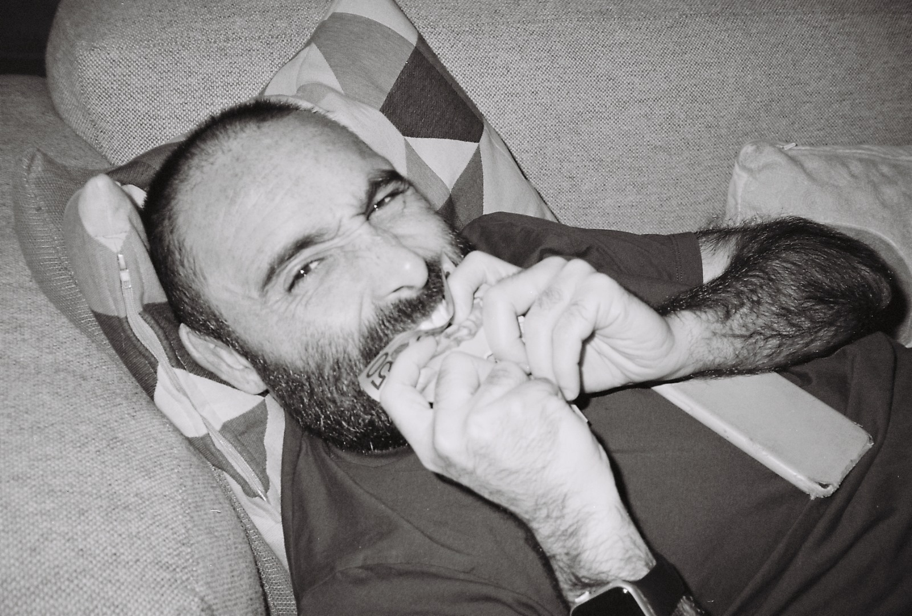

GILBERTO MATA ESCULTOR
Arquitectura, Universidad de Guanajuato y ITESO Guadalajara Jalisco
(1967-1969)
Artes Visuales ENAP UNAM
(1972-1976)UNAM
(1976-1978)
Jefe de Diseño
- ENAP-UNAM. Estudios Superiores (1976-1978)
- SCT. Dirección de investigación y Desarollo (1978-1980)
- Productora Nacional de Radio y Televisión -PRONARTE- (1978-1981)
- Colegio de Bachilleres. (1981-1985)
Promotor de Arte y Galerista
(1986-2011)
Exposiciones
“Piedras permeables” Galería Pacífico. Puerto Vallarta, Jalisco, 1989
“Reflejos” Prado Norte Galería 1992
”Árboles agua y Agua subterránea” Diego de Osorio Galería 1998 -2015
“Lluvia y árboles” Centro Cultural, León Gto. 1999
“Lluvia, Grietas, agua subterránea “ Tlapechico propuesta tridemsional, 2019-2020
“Lluvia y grietas” Galería Del Viento, San José del Cabo. 2022
“Lluvia, grietas en Tensión, Acuíferos “ esculturas, Taller en Estragón 2022-2023 CDMX
Colecciones privadas y públicas